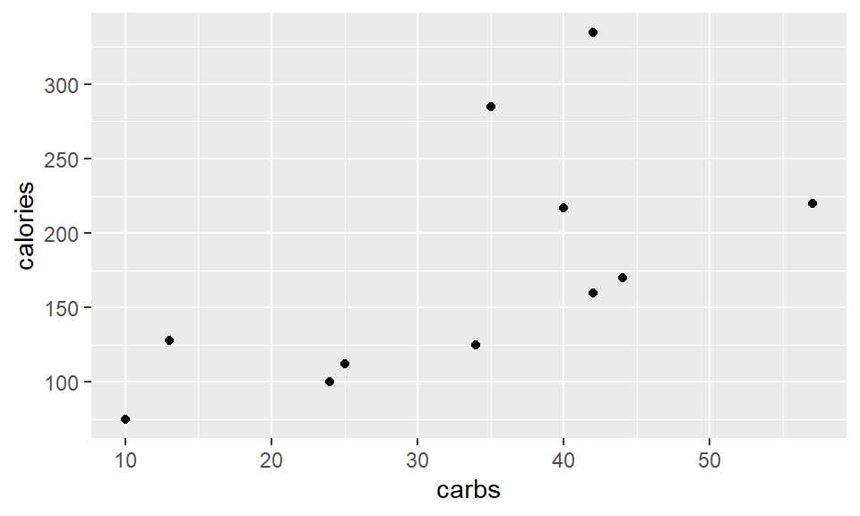

Lab + Numeric Literacy 01
Individual assignment
Due: February 13 at 23:59
Lab 1: Introduction to R and RMarkdown
Welcome to your first lab report specification!
Notice
Below you will find the numeric analysis. Kindly submit both assignments, combined in one final report.

Video Guide on Perusall
To learn more about different types of variables, please watch this short video.
- A step by step video with instructions on how to do this lab is available on Perusall.
- Please submit your lab using this link.
- Would you like to use one of your tokens for an extension or an upgrade from \(R \rightarrow M\) ? Please fill in this form.
- If you have questions, please book a slot during Ofer’s office hours!
This document defines the specifications you need to meet in your report. You will create a project in RStudio, which will consist of a folder with your various resources: write your report in rmarkdown, and zip the entire folder by the deadline. The output format and other meta-information can be specified in the YAML, at the beginning of your R Markdown document, as follows:
---
title: "Report for lab 1"
author: "Groucho Marx"
date: "Submitted 15-November-2021"
output:
html_document
---Exercise 1: Introduce yourself using RMarkdown

Ofer with nieces in the mountains of Jerusalem
Take a picture of yourself, your cat or something else that is personal to you. Then Write a little introduction about your relationship with statistics. Did you ever study it or thought of studying it? Do you have any background in statistics? Do you think learning it may benefit you in the future?
Do you reckon that you will remember anything from the course in a year’s time? How about two years time? Or more? You can use this introduction in order to show-off the skills that you’ve learned. For example, you could experiment with:
- The use of nested lists
- A link to web-pages about anything you feel could be relevant
- Doing cool stuff with fonts, such as
- Using italic font to emphasize really important ideas!
- Using bold fonts.
- If you are especially bold, try adding a little image of yourselves (doing something silly, like singing in the mountains.)
Specifications exercise 1:
For this exercise, you need to submit a text introducing yourself and making use of some of the features of RMarkdown. Add a picture of yourself if possible, make sure that your picture appears nicely in the knitted report.
Exercise 2: Manually presenting tables with data
Variable types
In this exercise, you are going to find your own dataset, and copy it manually, into your report. Try to find an interesting dataset, and mention where you found it (source). It is important that the variables are numerical, and that they are associated with one another somehow. Once you identify a dataset that you like, you will format it in a way that markdown would render as a table.
# Create a variable for your data
# The first line creates the variable 'food.data'
# The second defines the names of the columns
# The rest are entries in the dataset - one row per observation.
food.data <- tribble(
~item, ~grams, ~calories, ~carbs,
"Apricots", 250, 220, 57,
"Grapefruit", 250, 170, 44,
"skimmed milk", 250, 128, 13,
"Orange Juice", 250, 112, 25
)And, after adding a couple of rows, you can see the result below. Notice that in this particular table, every row (food item) is an object of observation (or unit of analysis), whereas the columns designate variables (aka covariate, feature or property of the object).
kable_classic(kbl(food.data), full_width = FALSE,position="left")| item | grams | calories | carbs |
|---|---|---|---|
| Apricots | 250 | 220 | 57 |
| Grapefruit | 250 | 170 | 44 |
| skimmed milk | 250 | 128 | 13 |
| Orange juice | 250 | 112 | 25 |
| chicken soup | 250 | 75 | 10 |
| Tapioca pudding | 250 | 335 | 42 |
| Spanish rice | 250 | 217 | 40 |
| Grape juice | 250 | 160 | 42 |
| Apple juice | 250 | 125 | 34 |
| Grapefruit juice | 250 | 100 | 24 |
| Spaghetti with sauce | 250 | 285 | 35 |
Finally, we can create a scatter plot as follows:
qplot(x=carbs, y=calories, data=food.data)
Now you can analyse what you found in a couple of sentences. For example, from the scatterplot above you can see that the calories are roughly proportional to the carbs in the food. All the items of food have a mass of 250g, so they are comparable in that sense. However, they may vary in the amount of fat they contain or in their protein. That’s why we see certain items that have a lower rate of carb despite having much calories. An example is the “Tapioca pudding” which clearly has just above 40g of carbs and yet tops the charts when it comes to calories…
Specifications exercise 2:
For this exercise, you need to describe the data set you found, and its source/origin. You will need to create a table with the data and a scatter plot that is based on your data.
Notice that in a scatter-plot, both the x-axis and the y-axis must refer to continuous variables. So you can use grams and calories, or age and height, or weight and height, because all of these are continuous variables. However, you cannot use country and flag, or personal ID and bank-account, or gender and language, because all of these are categorical variables.
Exercise 3: using mathematical notation in RMarkdown
In this exercise we will want to use mathematical notation in RMarkdown. You will choose a mathematical sequence, and see if you can calculate whether the sum of the series really matches what the formula says it would. For example, you could try one of these series, say - let’s take the following:
\[\sum_{k=1}^{m}k^2=\frac{m^3}{3}+ \frac{m^2}{2}+\frac{m}{6}\] \[\sum_{k=1}^{10}k^2=\frac{10^3}{3}+ \frac{10^2}{2}+\frac{10}{6} \] \[\sum_{k=1}^{10}k^2=1^2+2^2+3^2+...+10^2 \]
So now we need to take a vector of numbers, square each one of them and add them up together. Here are different ways of doing this. For example we could just say
# This first line creates a vector of numbers from 1, 2, 3... 10
series <- 1:10
# This second line squares the numbers, so that we get 1, 4, 9... 100
series.squared <- series^2
# Finally, we add all the squares and assign it to the variable 'sum.series.squared'
sum.series.squared <- sum(series.squared)So now we get that the sum.series.squared= 385. On the other hand, if we look at the formula above and assign the variable m=10, we get
m <- 10
result <- m^3/3+m^2/2+m/6And we find that the result= 385. So we have confirmed this result. Feel free to experiment with something more challenging, like using the Fibonacci sequence to arrive at the golden ratio, or finda series that converges to some interesting value such as the Leibniz formula for \(\pi\).
Specifications exercise 3:
Here you need to identify a sequence that has a formula. Please avoid using the formula given in the example. Instead, find a different formula. For example, you could use this formula:
\(1^3 + 2^3 + 3^3 +···+ n^3 = (1 + 2 + 3 +···+ n)^2\)
Which can also be written as…
\[\sum_{k=1}^{n}k^3= \left( \sum_{k=1}^{n}k \right)^2 \]
You will then calculate the sum of the sequence in two different ways: first directly, by adding up the numbers and second by calculating the formula. Finally, you will compare both calculations and show that you reached the same result.
DO’s and DONT’S in lab reports
✔️ DO
- Make sure your submission consists of a self-contained zip-file with a RMarkdown file and all necessary resources to knit it smoothly
- Include a knitted pdf or an html file with your report
- Present a report that looks professional, neat and tidy
- Upload a zip file with your name on it (first and last name)
- All the R- Code is contained within code-chunks
❌ DO NOT
- DO NOT show irrelevant code, data, messages or warnings in your report
- Where possible, avoid hard coding numbers into your text. Instead, calculations are made ‘on the fly’